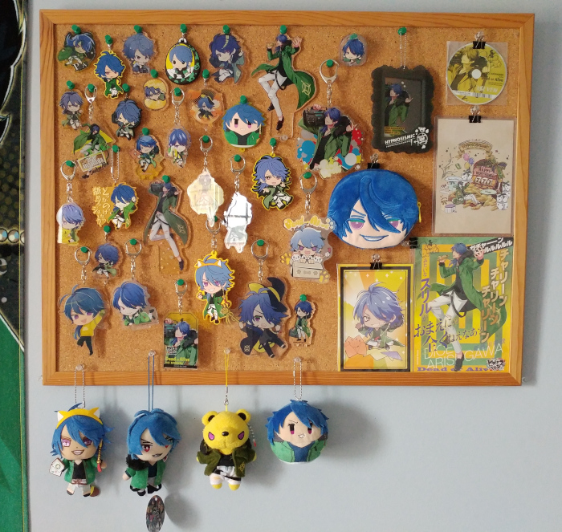
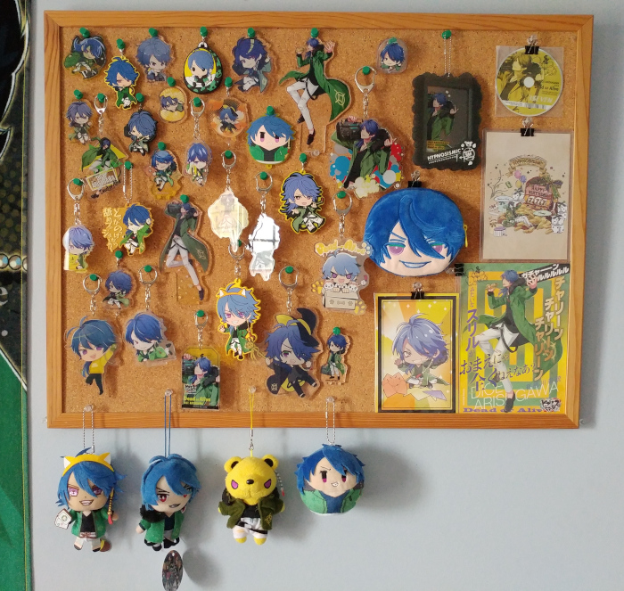

Reag's Hypmic fanpage
Last update: 18 September 2019
Hypnosis Microphone -Division Rap Battle- (shortened as Hypnosis Mic/Hypmic) is a Japanese media franchise mostly focused on J-rap, but also now comprises of drama tracks, manga, and soon-to-be a mobile game.
I don't associate much with the fandom anymore, but I'm still very fond of it and listen to the music all the time. ^^
Sections:
The world of Hypnosis Microphone
Contents:
The setting
Hypmic takes place in a dystopian setting: some time into the future, women now run the government and weapons have been banned, bringing an end to war. However, a technology known as the "hypnosis microphone" has been developed, allowing words to be used as weapons. In place of using guns or other such things, violence now happens in the form of participants engaging in rap battles. Though the use of these microphones is technically illegal, these battles are still regarded as entertainment, with approved major tournaments being permitted in the governing district of Tokyo.
The characters
Hypmic focuses on 12 main characters split into 4 different groups, each representing a section of Tokyo known as their "division." The divisions are as following:
Ikebukuro Division - Buster Bros!!!
 |
 |
 |
Yamada Ichiro
(MC.B.B) |
Yamada Jiro
(MC.M.B) |
Yamada Saburo
(MC.L.B) |
| 19, works odd jobs |
17, 2nd year in high school |
14, 3rd year in middle school |
Song list:
- Ikebukuro West Game Park
- Good Morning, Ikebukuro
- (VS MTC) WAR WAR WAR
Yokohama Division - MAD TRIGGER CREW

|
 |
|
Aohitsugi Samatoki
(Mr Hardcore) |
Iruma Jyuto
(45 Rabbit) |
Rio Mason Busujima
(Crazy M) |
| 25, yakuza |
29, police officer |
28, ex-navy |
Song list:
- Yokohama Walker
- Shinogi -Dead Pools-
- (VS BBros) WAR WAR WAR
- (VS Matenrou) Death Respect
Shibuya Division - Fling Posse

|
 |
 |
Amemura Ramuda
(easy R) |
Yumeno Gentaro
(Phantom) |
Arisugawa Dice
(Dead or Alive) |
| 24, fashion designer |
24, writer |
20, gambler |
Song list:
- Shibuya Marble Texture -PCCS-
- Stella
- (VS Matenrou) BATTLE BATTLE BATTLE
Shinjuku Division - Matenrou

|
 |
 |
Jinguji Jakurai
(ill-DOC) |
Izanami Hifumi
(Gigolo) |
Kannonzaka Doppo
(DOPPO) |
| 35, doctor |
29, host |
29, office worker |
Song list:
- Shinjuku Style ~Don't Make Me Laugh~
- Papillon
- The Champion
- (VS FP) BATTLE BATTLE BATTLE
- (VS MTC) Death Respect
Osaka Division - Dotsuitare Honpo

 |
 |
|
Nurude Sasara
(Tragic Comedy) |
Tsutsujimori Rosho
(WISDOM) |
Amayado Rei
(MC MasterMind) |
| 26, comedian |
26, teacher |
46, conman |
They have not received any songs so far.
Nagoya Division - Bad Ass Temple

 |
|
|
Harai Kuko
(Evil Monk) |
Aimono Jyushi
(14th Moon) |
Amaguni Hitoya
(Heaven & Hell) |
| 19, monk |
18, visual kei musician |
35, lawyer |
They have not received any songs so far.
The Dirty Dawg (TDD)
|
|
|
|
| Yamada Ichiro |
Aohitsugi Samatoki |
Amemura Ramuda |
Jinguji Jakurai |
2 years prior to the current time, The Dirty Dawg was a team composing of the division leaders before it fell apart.
Song list:
Other
 |
 |
|
Aohitsugi Nemu
Samatoki's sister |
Kadenokoji Ichijiku
Assistant Prime Minister
and
Administrative Director General of the Police |
Tohoten Otome
Prime Minister |
The music
Hypmic originally debuted with a song known as Hypnosis Mic -Division Rap Battle- in late 2017, which introduced the setting, divisions, and characters.
So far Hypmic has released 9 CDs. The first 4 were for each division: each CD contained 3 solo songs (one per member) and 2 drama tracks.
After all the division CDs were released, the next announcement came out: there was going to be a "battle season" in which the divisions faced off against eachother, and the victor would be determined by online voting. A new Division All Stars song was released to mark the occasion: Hypnosis Mic -Division Battle Anthem-
They started with 2 matchups: BBros vs MTC, then FP vs Matenrou, after which voting determined who would continue.
Each CD contained 1 "battle" song, 2 division songs, and 2 drama tracks for each division.
The first round of battles culminated with MTC and Matenrou victorious. Obviously, they then faced off.
This CD contained 1 battle song (Death Respect, probably my fav Hypmic song) and 4 remixes of the previously-released division songs.

Matenrou ended up winning the battle season (unsurprising as they're the most popular group... -_-;). However, the vote was apparently about 50-50.
Matenrou finished with a new single, which contained 1 new Matenrou song (The Champion), 1 song from The Dirty Dawg (TDD Legend), and 2 drama tracks.

Afterwards in April 2019, a full album was released. This contained 3 Division All Stars songs (including a new one titled Hoodstar), 4 new division songs along with the 4 battle seasons ones, and TDD Legend. There was a special edition that also included 5 drama tracks, in addition to another SE that also contained blurays for the 2nd and 3rd lives.

After a hiatus, in September 2019 the theme song for the mobile game Hypnosis Mic -Alternative Rap Battle- was released.
2 new divisions were announced soon after: Osaka Division: Dotsuitare Honpo, and Nagoya Division: Bad Ass Temple. No song previews have been shown so far, but both are to debut in the coming months; Osaka Division will debut on October 30, and Nagoya Division will debut on November 27.
drama tracks
Currently, the majority of Hypmic's world has been explored through drama tracks which are released on most CDs. In addition, they are usually released on Youtube as well.
List:
manga
Hypmic has 3 different manga series that expand on the drama tracks and lore, each focusing on different groups within the series:
- Hypnosis Mic -Division Rap Battle- side B.B & M.T.C
- Hypnosis Mic -Division Rap Battle- side F.P & M
- Hypnosis Mic -Before the Battle- The Dirty Dawg
I actually haven't been able to read these yet, so unforunately I can't comment too much on them.
mobile game
A mobile game titled Hypnosis Mic -Alternative Rap Battle- has been announced for release sometime in 2019, but there isn't too much known about it other than that it will have rhythm game elements, introduce new characters, have new songs, and take place in an alternate universe.

New charcters.
The game is scheduled to release in December 2019.
my experience with hypmic
dice....................... *fondly touches the screen*
first contact
I was first introduced to Hypmic in late 2017 when it was first announced -- I had a few mutuals on Twitter who were interested in the premise and followed it closely, but I actually wasn't too interested myself as it centered around a ridiculous setting (sad dystopian society where men are oppressed lol), focused on male characters, and was styled around rap.
I didn't actually start getting into Hypmic until about early December, before the release of the Matenrou CD. Corrupt cop Iruma Jyuto was the first character who really caught my eye, being a glasses-wearing dipshit in a suit. I was intrigued, so I finally caved and gave the music a listen -- honestly, I wasn't blown away. I'm not a fan of rap to begin with, so I honestly didn't care for most of the songs I listened to. I enjoyed Sensenfukoku and the Division Rap Battle song, but that was about it. I was still interested though, so I made sure to give a listen when the Matenrou previews dropped.
When the Matenrou previews came out, I instantly fell in love with Hifumi and his solo song Champagne Gold. I became more interested in Hypmic thanks to Matenrou and I obsessed over Hifumi for about a month, and then... the Fling Posse CD came out. After this, I discovered Dice was my true love and man was it a downward descent from there. I did eventually come to enjoy the majority of Hypmic music after it grew on me, and I think I do have more appreciation for rap/hip-hop in general now.
Anyway, Hypmic had actually had no merch until late January/February 2018 iirc, but once they started producing it it had a lot. I became super focused on collecting Dice merch for months and months, and I spent an absolutely ungodly amount of money on merch and proxy services. Eventually (after about a year) I lost interest in merch, but in that time period I probably managed to get the majority of merch that was released. It's kinda rough to look back on, but it's also fun to see that I have quite an impressive Dice shrine lol
my favs
Characters: Dice (ULTRA FAV), Hifumi, Saburo
New characters, even though we don't know too much yet: Rei (bad grandpa), Jushi (visual kei dice)
Divisions: Bbros, Matenrou
Songs (too many...): Death Respect, Battle Battle Battle, Stella, Shibuya Marble Texture, 3$EVEN, Champagne Gold
daisu...
Honestly I'm not really sure how to explain my love for Dice here but. Mayhaps these pictures will help explain:

 

... yeah